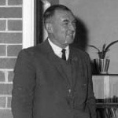

Stan Condon
1962 - 1971
 Mr. Stan Condon was Principal of Port Macquarie Intermediate High School, located where Port Macquarie Public School now is, from 1956 to 1961 before moving to the new premises in Owen Street. In 1962 this became a full high school, taking students through Fourth and Fifth Years to the Leaving Certificate. Before 1962 students who wished to study for their Leaving Certificate had to travel to Wauchope.Stan Condon was one of many in the community who had lobbied for a new high school even after the community rejected the idea of giving up a section of the old golf course which by then had become public parkland. A referendum on the matter in 1956 was lost 953 votes in favour of using the public land for a high school to 1,542 votes against. Public opinion remained divided and a second referendum held in December 1959 was carried with 2,109 votes for the school and 701 against. Work commenced on the school in 1961.
The many newspaper clippings in the high school’s archives attest to the popularity that Stan Condon enjoyed while Principal. He was highly regarded by the community and respected by all. He wasn’t one for long lists of school rules. Rather, he encouraged students to take responsibility and use their common sense.
Stan continued to teach for many years after his retirement when called on to fill in for sick and absent teachers. His passion and enthusiasm for teaching continued.
Gordon Milne
1972 - 1984
Mr. Gordon Milne, who had been Deputy Principal at Lithgow High School, was appointed Principal to replace the retiring Stan Condon. Gordon developed a reputation as an old-fashioned principal who was tough but fair with both students and staff. He was prepared to confront parents with the hard questions regarding parenting and their role in the education of their children. His comments at the end of year assemblies often attracted headlines in the local paper. (His speeches are housed in the school’s archives as are the many newspaper clippings).In his time as Principal, Gordon continued to lobby for a school auditorium which he finally succeeded in acquiring and which got built in his last year as Principal and was officially opened the year after he retired.
Gordon was also a leader in the Pappinbarra Field Studies Centre Trust and secured a grant for $10,000 worth of equipment for the Centre which began to accommodate groups from 1977 onwards. He is also fondly remembered by students and staff as a tireless worker for the school. He set high standards for himself and expected high standards in others. He had the respect and loyalty of his staff and students.
Richard Grimmond
1985 - 1986
Mr. Richie Grimmond was one of the first teachers to enter the new school in 1962 as a junior teacher. He later became Principal at Finley High School before returning to Port Macquarie High School as its third Principal in 1985 after Gordon Milne retired.Richie found that he had large shoes to fill and some staff were less than helpful. The previous Principal did not delegate responsibility to the extent that the executive staff found Richie’s style difficult to manage and a certain atmosphere of conflict developed. The new style of leadership was resented by many and it made life difficult for the new Principal.
The Bicentennial celebrations were a huge success during 1986 and the new Multi Purpose Centre was officially opened.
Richie retired after just one year at the helm.
Graeme Mitchell
1986 - 1988
Mr. Graeme Mitchell is remembered for introducing the annual Antique Fair as a major fundraiser for the school and it continued with the help of the P & C for a number of years after Graeme retired.Graeme was a likeable and affable Principal who had his morning teas with the canteen ladies and shared a joke and a friendly smile with just about everyone. He too found the going tough and two years as Port High’s fourth Principal brought him to retiring age.
David Brown
1988 - 1999
The school desperately needed a younger, more energetic Principal who would stay longer than one or two years. Mr. David Brown was promoted to become the school’s fifth Principal in 1988 and he did go the distance.David’s ten years are often referred to as “The Golden Years” by staff and students from those years. David also took on Distance Education as an additional responsibility and demountable buildings sprang up everywhere around the perimeter of the school. The school grew to its biggest ever in staff and student numbers.
David began a process of building shelters in the playground, which jokingly were referred to as “Brown’s Barns.” With the help of Geoff Schache, many alterations and additions to buildings took place which improved facilities both inside and outside.
Open Days became a feature of David’s time at the helm.
David is fondly remembered for his many achievements and his hard working efforts in getting the school up and running effectively once more.
Mark Longstaff
1999 - 2012
Mr. Mark Longstaff is the school’s sixth and longest serving Principal. On his arrival from Broken Hill he couldn’t believe how much it rained here especially in 1999. Mark’s advocacy for public education is well known and admired and he was consistent in promoting public education during his thirteen years as Principal of the school. He didn’t shy away from controversy.The first big job to be tackled in 1999 was the relocation of Distance Education from Port Macquarie High School to its new home at Camden Haven High School. Between 50 and 60 staff had to be ‘forced transfers.’ Mark handled this potentially difficult period seamlessly, with all but four staff members volunteering to move, and all transfers kept within the district. The process of rebuilding Port Macquarie High School as a fully comprehensive high school began once more.
Mark continued the building improvements started by David Brown and added some new shelters for students. He volunteered to teach history classes to lead by example. He inspired students and staff to take up jogging and join him in the annual City to Surf run in Sydney.
In 2012, Mark co-ordinated the school’s 50th Anniversary celebrations which were held during the Easter School holidays and which were reported as being a ‘huge success.’
Mark took many by surprise when he announced his retirement at the end of 2012.